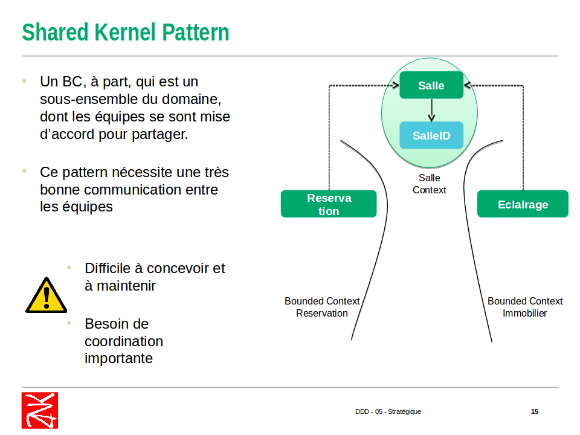
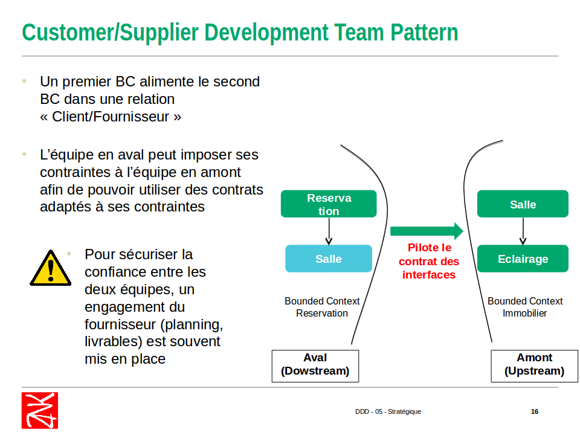
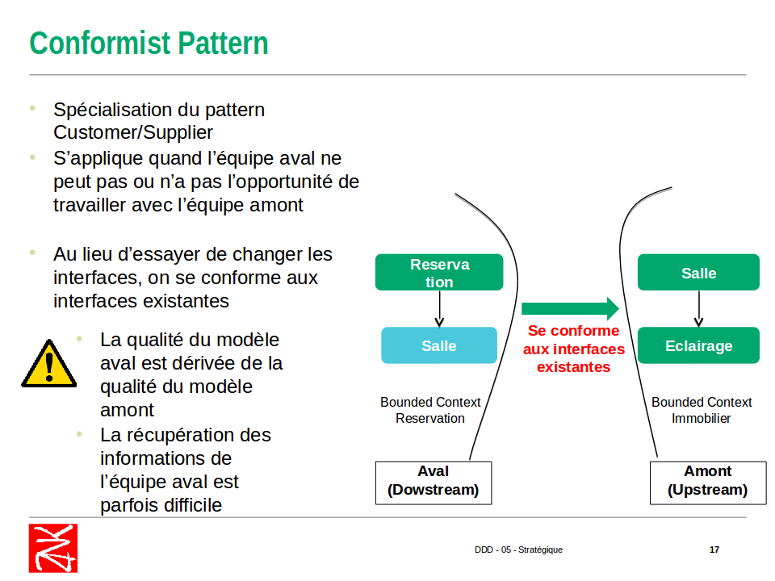
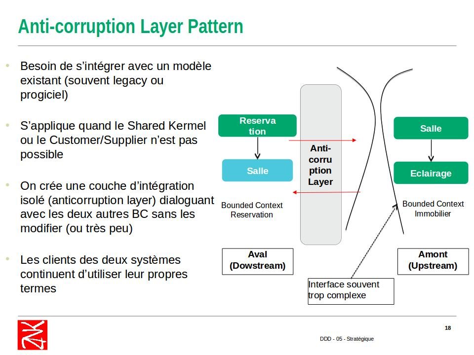
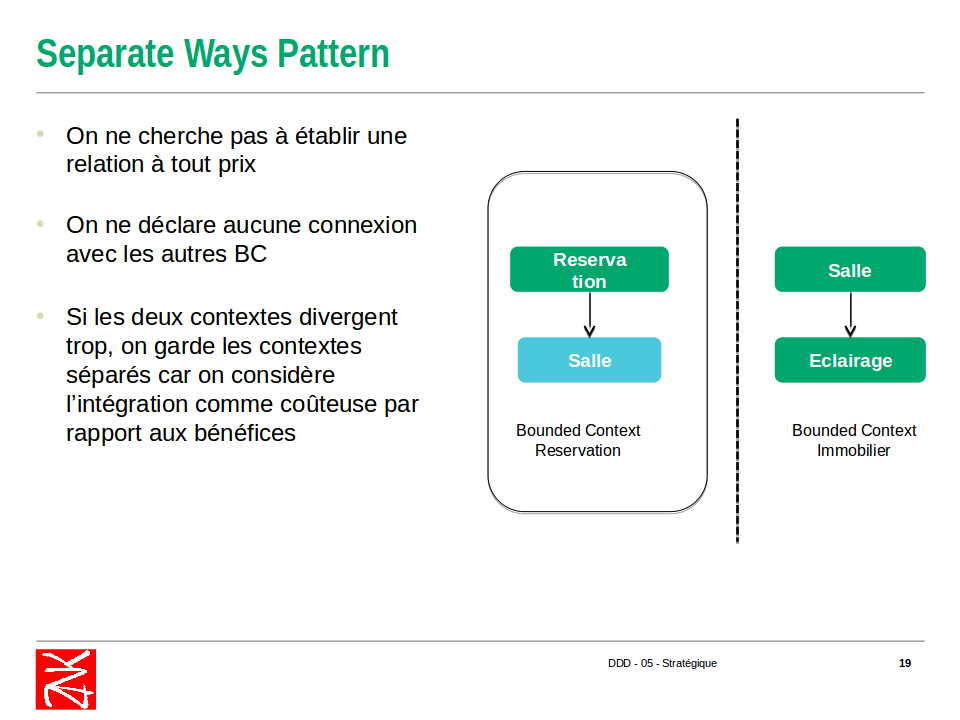

Domain Driven Design
NightClazz
Qui suis je ?

Khaled Souf
Vous êtes perdus ?

Posez des questions !

Sommaire
- Domain Driven Design c'est quoi ?
- Langage ubiquitaire
- pause Pizza
- Design Stratégique
- Design Tactique
Domain Driven Design
c'est quoi ?
- Une méthode de conception logicielle qui favorise une conception proche de la réalité
- Focalisation sur le métier (au lieu d’uniquement des parties techniques)
- On utilise explicitement des noms et des verbes du domaine dans le code
- La connaissance métier est le noyau de l’application
Langage ubiquitaire
- C'est quoi ?
- Par ou Commencer? (Impact Mapping)
- Comment le construire? (Event Storming)
- Modélisation
Langage ubiquitaire
- Les développeurs devrait parler le langage des Expert métiers
- Utiliser ce langage pour éviter le "Mapping Mental"
- ce lanagage qui est utilisé pour communiquer doit se réfléter dans le code.
- La puissance de ce langage se traduit par un "Modèle Métier"

Impact Mapping
Impact Mapping
- une méthode de visualisation "mind mapping" du "scope" et des suppositions soujacentes
- quatre aspects sont à trouver: le But, les Acteurs, Les Impacts, Les Livrables
Impact Mapping

Hands on !

Event Storming

Event Storming
- invitez les bonnes personnes à l'atelier
- fournissez un espace illimité pour la modélisation
- Explorez votre domaine à partir des "Domain Events"
- Explorez l'origine de vos "Domain Events"
- Trouvez vos aggrégats
Event Storming

Modélisation
- Les modèles décrivent certains aspects du domaine
- Un modèle forme les bases d’un langage spécialisé pour un domaine
- Les modèles sont crées et exploités par les différents acteurs de la chaîne logicielle.
- Faciliter l’exploration du métier
- Gérer la complexité
- Générer du code (de moins en moins)
Modélisation (Model Storming)

Pause Pizza
Design Stratégique
- Contextes bornés (Bounded Context)
- Mapping de context (Context Mapping)
Contextes bornés (Bounded Context)
- Un Bounded Context est un contexte délimité par une frontière linguistique nette.
- Dans un Bounded Context, le modèle du domaine est exprimé par un Ubiquitous Language
- Un domaine métier peut contenir plusieurs Bounded Context
- chaque Bounded Context définissant son Propre Language
Contextes bornés (Bounded Context): Avantages
- Renforce la pureté et la puissance du modèle
- Evite la confusion avec les autres contextes
- Simplifie l’Architecture (Fait émerger des transitions explicites entre les différents contextes)
- Favorise un partitionnement technique et organisationnel


Context Mapping
- Permet d'identifier les points de contact et les relations entre les différents modèles
- On identifie les Bounded Context amont et aval
- On analyse les transformations nécessaires
- ça peut être une relation entre deux équipes
- L’équipe en amont (upstream)
- L’équipe en aval (downstream)
shared kernel pattern
Customer/Supplier
Conformist
Anti Corruption Layer
Separate Ways
Hands on !
Design Tactique
- Domain Events
- Entity et Value Object
- Agrégats
- repositories et Factories
- services
Domain Events
- modélisent l'activité dans le domaine par une série d'événements discrets
- S'est produit dans le passé
- Intéresse les experts métier
- Fait partie de l'Ubiquitous language
Contenu Domain Events
- IDENTIFIANTS des entités impactées
- DATE/HEURE de survenance
- Le CONTEXTE avant et après l'événement
- NUMERO DE SERIE de l'événement
- PAS DE COMPORTEMENT !!!!
Value Object
- Une valeur est intangible et immuable
- Quantité ou description immuable
- ensemble de valeurs avec un nom explicitant le sens de cet ensemble
- un comportement propre au nouveau concept
Contenu Value Object
- MAGNITUDE et UNITE Conversion vers une autre unité
- CONVERSION depuis/vers représentation textuelle
- REGLES DE VALIDATION Appartenance à un intervalle, conformité à un format, ..
- COMPORTEMENT propre au domaine
- PAS D'IDENTITE !!!!
Entité
- IDENTITE Unique et Immutable
- ETAT mutable à travers le temps
- RELATIONS avec d'autres Entités (associations)
- COMPORTEMENT METIER utilisant l'état encapsulé
Agrégats
- Un et un seul AGGREGATE ROOT point d'entrée unique de l'agrégat
- Des ENTITES Quelques unes au maximum
- Des VALUE OBJECTS sans limitation de nombre
- Un (ou plusieurs) invariant
Racine d'agrégats
- Des VALUE OBJECTS Identités
- Des VALUE OBJECTS caractérisant son état
- Les COMMANDES de modification de l'Agrégat
- Les QUERIES de calcul d'un état agrégé
- Des références vers des ENTITES Du même Agrégat
repositories
- permet de charger l'Aggregate Root
- encapsule la création, la suppression et la modification d'un Agrégat
- Les Repositories représentent un moyen d'accès à un ensemble d'objets
- Ils donnent l'illusion d'une simple collection en mémoire
factories
- permet la création des Agrégats complexe
- produit un Agrégat complètement construit, satisfaisant tous ses invariants.
- représente une création métier d'un agrégat
Services
Application Service
- Chaque use case va s’incarner par un Application Service
- Utilisation d’une forme verbale (Verbe + Complément d’objet) Notion d’Action
- La transaction métier est au niveau du use case
- On ne peux composer les Application Service entre eux
- Pas d’état
Domain Service
- Comporte des règles métier
- Implémente un concept du domaine qu'il n'est pas naturel à une Entité ou à un Value Object
- Exemple: Comportement à cheval sur plusieurs Entités
- Composition possible d'un Domain Service à partir d'autres Domain Services
Infrastructure Service
- Il contient des éléments techniques Exemples: Intégration, Communication extérieure
- L’interface est dans la couche Domain
- L’implémentation est dans la couche Infrastructure